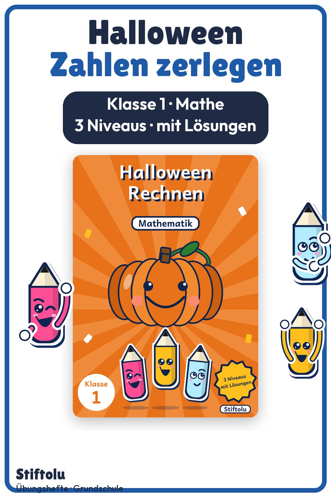

Werbung · Übungsheft von Stiftolu
Halloween-Woche in Klasse 1: Zahlen zerlegen und rechnen bis 20

Kürbisse zerlegen und Süßes sammeln: Zwei Kapitel führen durch den Zahlenraum bis 20, ganz ohne Zehnerübergang. Je Stufe gibt es eine Seite, dazu Abschluss-Check, Lösungen und Handreichung. Alle 27 Seiten gehören zum Shop Stiftolu, erhältlich auf eduki.